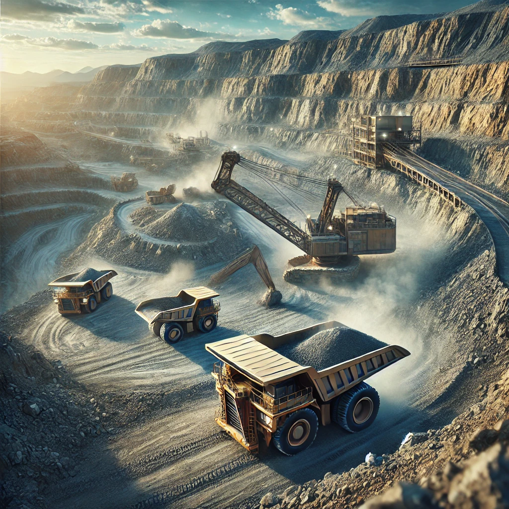
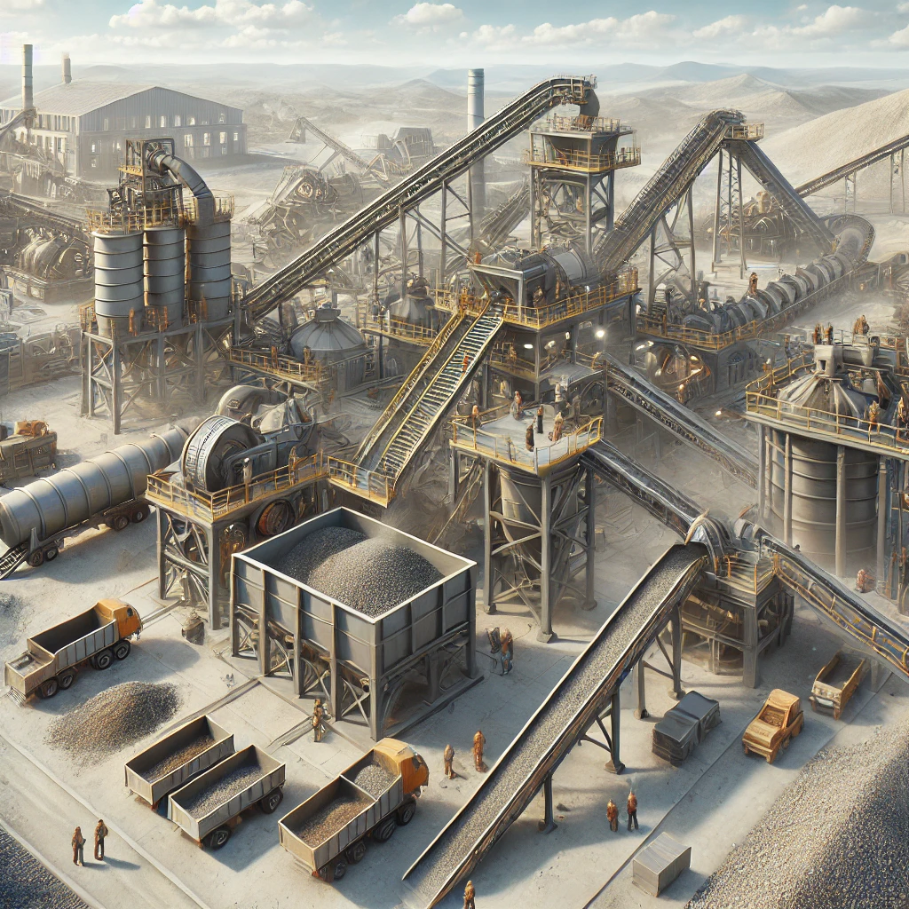
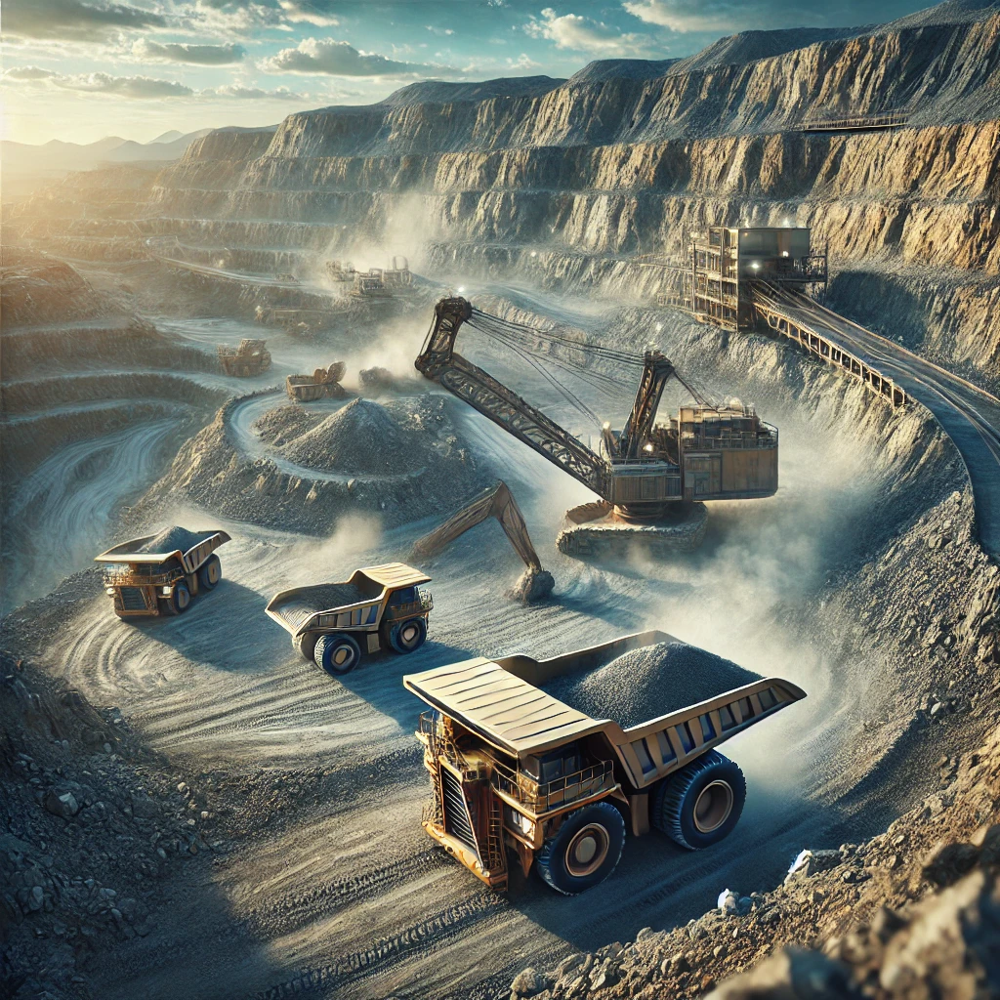
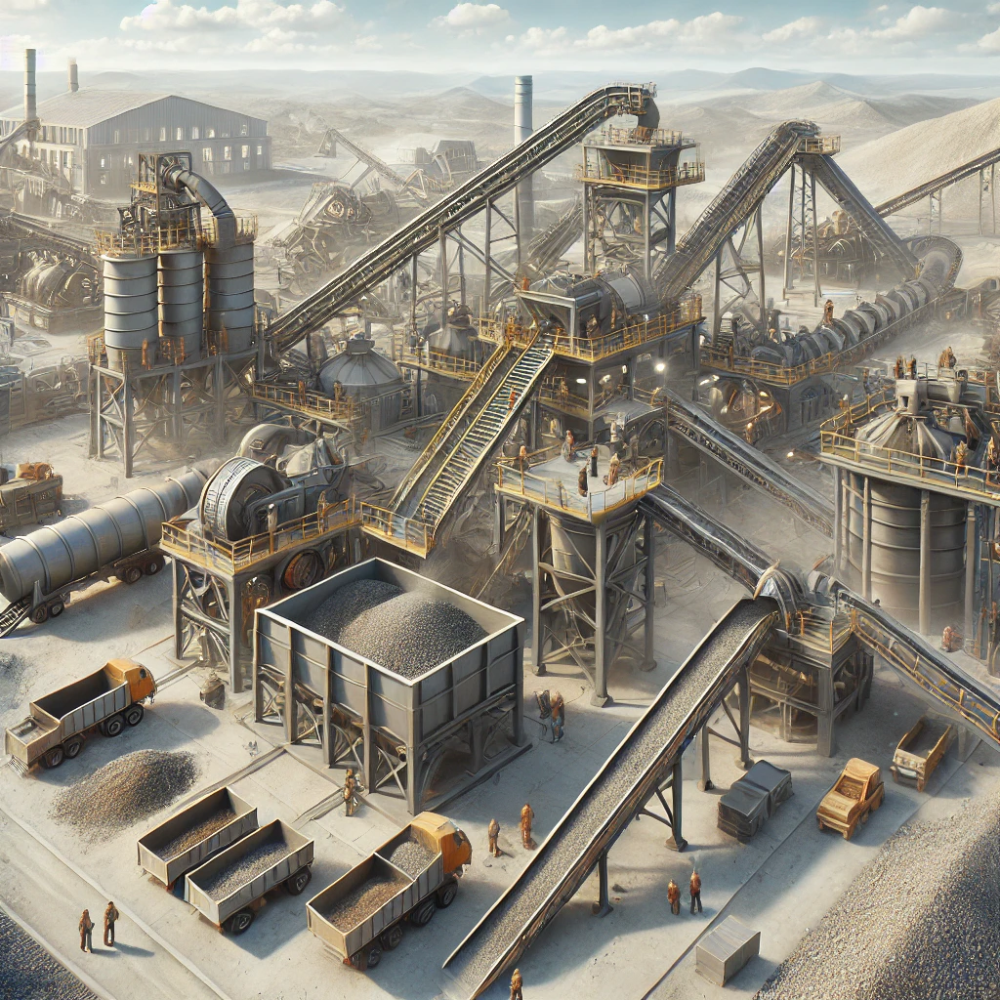

EPET N° 1 DE ALBARDÓN
Visión
Ser una escuela que promueve la capacidad de pensamiento histórico, relacional, reflexivo y crítico, que propicie los valores universales, la tolerancia, el respeto por el otro, la solidaridad, la justicia y el ejercicio de la libertad responsable, con un criterio positivo ante la vida. Que sepan juzgar el mundo en el que se mueven y puedan tomar actitudes (decisiones) coherentes con su forma de pensar.
Brindar las herramientas necesarias para ser ciudadanos competentes, que se desempeñen exitosamente tanto en ámbitos de estudio como laborales, manteniendo así el prestigio de la escuela.
Misión
La EPET N° 1 de Albardón es una organización cuya misión es educar en forma integral a los alumnos, posibilitando así que sus egresados pongan en práctica los conocimientos, habilidades, actitudes y destrezas, tanto en el siguiente nivel educativo, como en el mundo laboral donde se desempeñen.
Se pretende formar personas competentes y fortalecidas en valores (éticos, morales, etc.) que permitan la integración a una sociedad productiva y cambiante.
Investigación sobre Minería
La minería es una de las actividades más antiguas de la humanidad y sigue siendo crucial para la economía global. Desde la extracción de metales preciosos como el oro, hasta recursos estratégicos como el litio, la minería no solo abastece a la industria manufacturera, sino que también es clave para el desarrollo de nuevas tecnologías, especialmente en áreas como la electrónica y la energía renovable.
Especialidad - Técnico Minero
Introducción
La Minería se ha convertido en un factor fundamental para el desarrollo económico y social de Argentina y de la Región. La gran minería en San Juan, junto con la reactivación de la pequeña y mediana minería, ha impulsado la necesidad de una formación profesional en el sector. El Técnico Minero colabora con Ingenieros de Minas y asiste a medianas y pequeñas empresas mineras en aspectos de regulación y cumplimiento de normativas.
Perfil Profesional
El Técnico Minero estará capacitado para:
- Proyectar acciones de prospección, exploración, evaluación y desarrollo de yacimientos.
- Realizar análisis y ensayos mineros.
- Operar materiales, equipos e instalaciones para perforación, voladura, y tratamiento de minerales.
- Realizar mantenimiento predictivo, preventivo y correctivo en instalaciones mineras.
- Montar y operar equipos y sistemas utilizados en minería.
- Asesorar en la selección y comercialización de maquinaria minera.
- Participar en emprendimientos mineros.
Habilitaciones Profesionales
- Dirección de pequeñas y medianas explotaciones mineras.
- Gestión de tareas mineras subterráneas para equipos de hasta 50 personas (con 10 años de experiencia).
- Dirección de plantas de trituración, molienda y tratamiento de minerales.
- Asistencia en laboratorios de química, geología, topografía, y museos mineralógicos.
 


